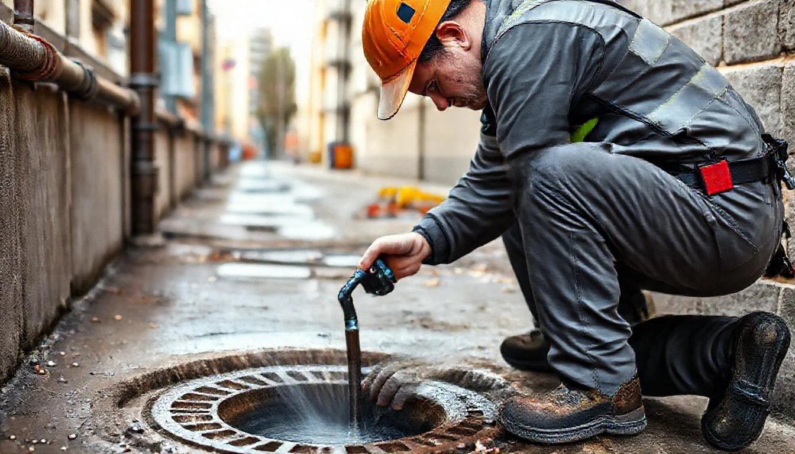

Somos Grupo Resulima, empresa de desatascos con base en Dos Hermanas. Llegamos en menos de 60 minutos, damos precio cerrado antes de empezar y garantizamos el trabajo 3 meses por escrito.

Un atasco en el momento más inoportuno puede convertirse en una situación muy estresante. Por eso Grupo Resulima mantiene operativos sus equipos las 24 horas del día, los 7 días de la semana, incluidos festivos y nocturno. No hay recargos por llamadas fuera de horario laboral.
Cuando llamas, el operador te solicita una descripción del problema y la dirección, y te confirma el precio cerrado antes de que el técnico salga. En la mayoría de los casos urgentes en Dos Hermanas llegamos en menos de 30-45 minutos.
Atendemos cualquier emergencia de saneamiento a cualquier hora. Sin esperas, sin recargos ocultos.
Ver másAlta presión para eliminar grasas, raíces y sedimentos. Arquetas domésticas e industriales.
Ver másRehabilitación de tuberías sin romper suelos ni paredes. Tecnología trenchless.
Ver másCamión cisterna propio para fosas y pozos negros. Gestión de residuos certificada.
Ver másCon base en Dos Hermanas, cubrimos todos los barrios y urbanizaciones del municipio:
En Dos Hermanas llegamos habitualmente en menos de 60 minutos desde que nos llamas. En barrios cercanos a nuestra base como Montequinto u Olivar de Quintos, el tiempo suele ser inferior a 30 minutos.
Los desatascos domésticos estándar parten desde 90€ con precio cerrado. El importe exacto depende del tipo de obstrucción y la instalación. Te lo confirmamos por teléfono antes de desplazarnos, sin coste de visita.
Sí. Atendemos a comunidades de propietarios, administradores de fincas y empresas. Podemos establecer contratos de mantenimiento preventivo para comunidades con bajantes y arquetas comunes.
No aplicamos recargos por horario nocturno ni festivo. El precio que te damos por teléfono es el precio final, sea la hora que sea.
Sí. Emitimos factura para todos los trabajos, tanto para particulares como para empresas y comunidades. Puedes solicitar factura con IVA desglosado al contactarnos.